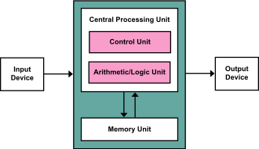

Von Neumann Architectuur
In de door Von Neumann ontworpen computer staat de processor (CPU) centraal. De CPU communiceert met het geheugen. Externe invoer en uitvoer stuurt de CPU naar de randapparatuur.
GEHEUGEN ↔ CPU ↔ RANDAPPARATUUR
De cpu haalt stap voor stap zijn instructies uit het geheugen. De werking van de cpu is gebaseerd op het Turing Principe, waarbij instructies een voor een opgehaald en uitgevoerd worden.
Ook kan de cpu het geheugen benutten voor (tijdelijke) opslag van gegevens. Dit wordt de Von Neumann-cyclus genoemd.
De Von Neumann-architectuur, ook wel de Von Neumann-machine genoemd, is een belangrijk concept in de computerwetenschap dat de basis vormt voor de meeste moderne computers. Het werd bedacht door de Hongaars-Amerikaanse wiskundige en informatica pionier John von Neumann in de jaren 1940.

De Von Neumann-architectuur bestaat uit vier belangrijke onderdelen:
- Centrale Verwerkingseenheid (CPU): Dit is het brein van de computer, verantwoordelijk voor het uitvoeren van berekeningen en het beheren van gegevensverwerking.
- Geheugen: Het geheugen slaat zowel gegevens als programma-instructies op. Dit wordt meestal onderverdeeld in RAM (Random Access Memory) voor tijdelijke gegevensopslag en opslagmedia zoals harde schijven voor langdurige opslag.
- Invoerapparaten: Deze apparaten, zoals toetsenborden en muizen, stellen gebruikers in staat om gegevens in de computer in te voeren.
- Uitvoerapparaten: Deze apparaten, zoals beeldschermen en printers, tonen of produceren resultaten voor de gebruiker.
Wat de Von Neumann-architectuur bijzonder maakt, is dat zowel programma-instructies als gegevens op dezelfde manier in het geheugen worden opgeslagen, namelijk binair (nullen en enen).
Dit stelt computers in staat om instructies op te halen, uit te voeren, en vervolgens de resultaten op te slaan, waardoor programmeerbaarheid en flexibiliteit mogelijk worden.
In het kort heeft de Von Neumann-architectuur het moderne computer ontwerp gevormd en heeft het de weg vrijgemaakt voor de ontwikkeling van softwaretoepassingen die we vandaag de dag gebruiken. Het blijft een cruciaal concept in de computerwetenschap en informatica.